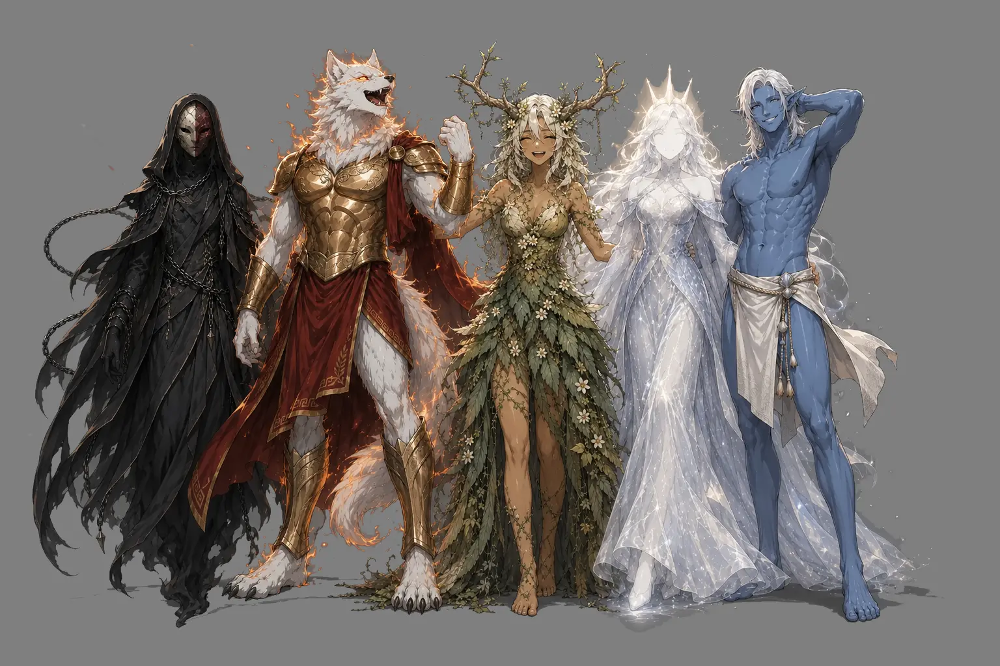

Tales of Sain: The Tale of the Starbeast
In the ages past, the Land of Sain was a prosperous place, with wonders of magic, technology and their combined might in artifice creating a civilization that modern people cannot imagine, which still linger to this day. With greatness, comes the pride and with pride comes foolishness. People of Sain wanted more – to ascend beyond just mortals and push themselves to realms of divinity, blaspheming against their gods, that still remain unknown to us.
With that divinity has forsaken the land and was replaced with a force more insidious, that harbored hidden malice and desire for power and control, thus was the Starbeast – a creature of unknown origin, that promised great treasure and knowledge to the wise of Sain. What they bargained for, they shall receive, but with this they allowed passage onto Sain to the beast, or at least to a portion of it.
With that an era that has left many scars began – Starbeast slowly began spreading Its influence, at first in smaller pockets in peripheral regions of Low Isles and Irkhatir Peninsula, but later claiming most all of the Land of Sain, with a seat of power in the former capital to the strongest Empire that united most of the continent – Empire of Sain, as if to mock those who have built this place, completely reshaping it and the surrounding regions.
For many centuries Starbeast and its have ruled over Sain with iron grip, destroying what remained of old civilization to crush the pride of the people of Sain, plunging the world into era of darkness of both technology and magic, leaving many dead and more suffering. The rule was unequal and some regions were destroyed more than others, with the Isles of Sain being unrecognizable, compared to their former stature.
After laying low for a long time, people of Sain finally had enough of the Starbeast’s and Its envoy tyrannical rule, and so the existing resistance movement that has been almost snuffed out, has gained steam and many attempts were made to topple the divine being once and for all, with most of them resulting in no change. Despite that the will prevailed and many more tries were made – the odds were stacked against them, but they were not zero.
After many years finally a certain, now well known party of adventurers assembled, already legendary in their time, and marched towards the Isles of Sain, the now deformed former capital of the Empire of Sain, where the Starbeast now ruled. After much struggle and strife heroes of this story arrived and sacrificed themselves in a terrific battle, that led to the sinking of the Isles of Sain and putting these corrupted ruins to rest for good.

After the battle due to the unknown power instead of scattering across the Land of Sain, as the legend says, their spirits apotheosized and ascended to what is now known as the Five – the main pantheon recognized across all of Sain, as the liberators of this land: Ikrir the Radiant Moon, Ottil the Forestborn, Vi’qr the Sunburst, Ghalak of the New Tide and Eretha.
Aftermath
After the Tale of the Starbeast the fight was not yet over, as now the shattered realms devolved into petty fights among themselves. They were fighting for war and domination, ravaging already struggling populations, but in the recent times this has come to an end, giving people the possibility to breathe and recover.
With technology and slowly recovering, the future looks bright again, but the ruins of yesteryear remain to be unearthed – do people of Sain have what it takes to recover what was once lost and build upon it… This remains to be seen.